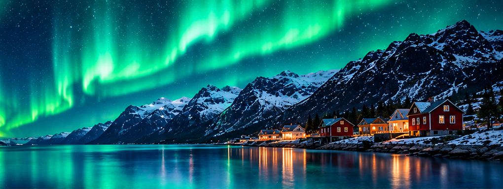
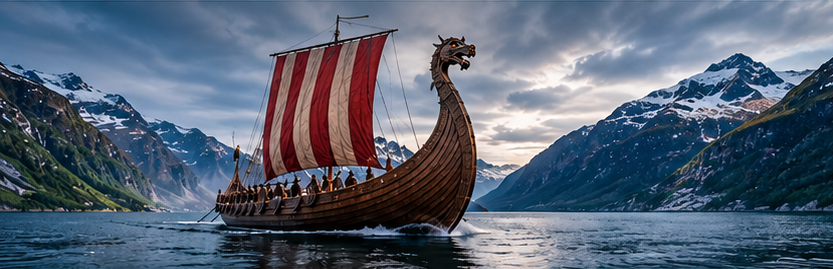
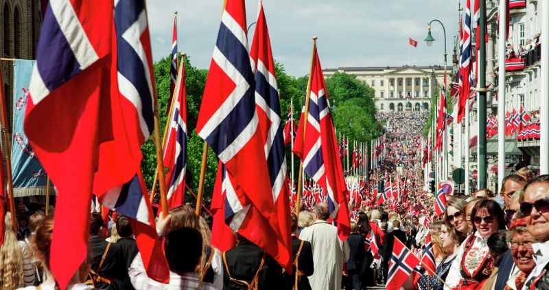

Explore a cultura, a história, o futebol e as belezas naturais de um dos países mais fascinantes do mundo.

Navegadores, guerreiros e exploradores que marcaram a história.

Conheça a origem e as grandes navegações dos Vikings.
Descubra os costumes e as tradições da sociedade Viking.
Entenda como os Vikings influenciaram o mundo atual.
Conheça a paixão da Noruega pelo futebol.
Conheça a seleção, seus jogadores e suas participações em Copas do Mundo.
Descubra os principais clubes e competições do futebol norueguês.
Conheça os principais nomes do futebol da Noruega.
Cultura cheia de riquezas

Nomes como o dramaturgo Henrik Ibsen e os escritores Knut Hamsun e Sigrid Undset (ambos vencedores do Prêmio Nobel de Literatura) possuem grande relevância global.
Além da música clássica de Edvard Grieg, a Noruega destaca-se internacionalmente pelo pop (como a banda A-ha) e pelo black metal norueguês.
Edvard Munch, autor da famosa obra O Grito, é o maior expoente da pintura norueguesa.
No norte, o sol some no inverno e não se põe no verão. Escolha a estação.
Entre novembro e janeiro, o sol não aparece no extremo norte. É a melhor época para a aurora boreal.
ilhas e ilhotas no litoral
de extensão do Sognefjord
do Galdhøpiggen, o ponto mais alto
Conheça alguns dos sabores tradicionais da Noruega. Escolha um prato.
O Krumkake é um doce tradicional norueguês, conhecido por sua massa fina, crocante e enrolada. Geralmente é recheado com chantilly e servido em ocasiões especiais, principalmente durante o Natal.
Uma das sobremesas tradicionais da Noruega
Muito associado às celebrações natalinas
Possui massa fina e textura delicada